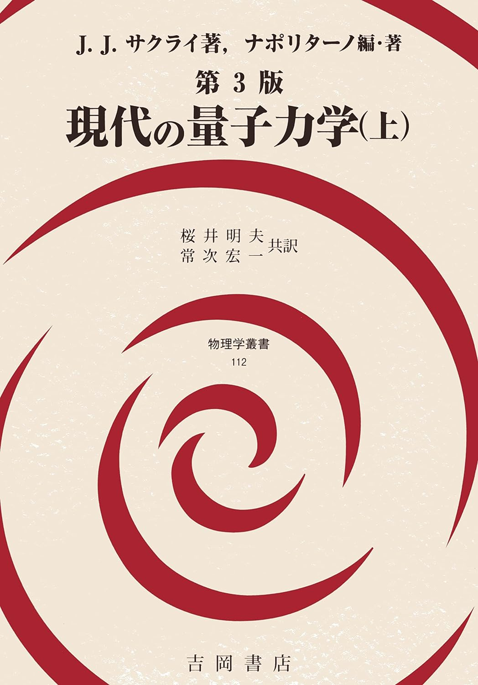
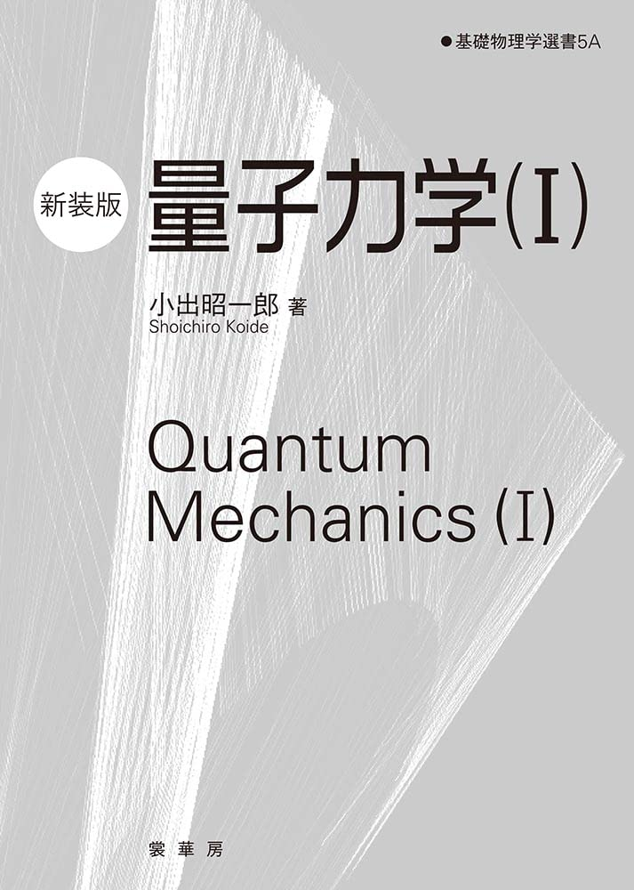
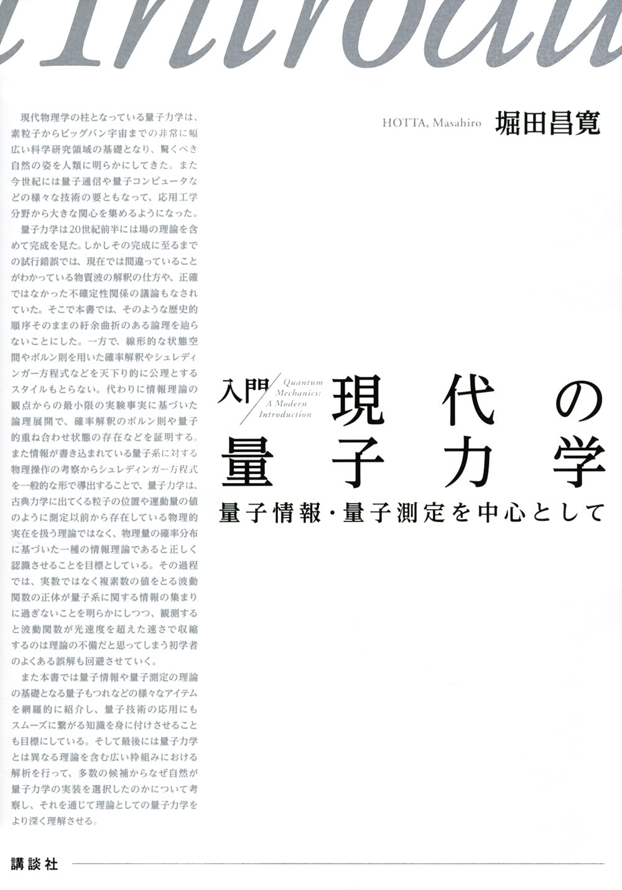
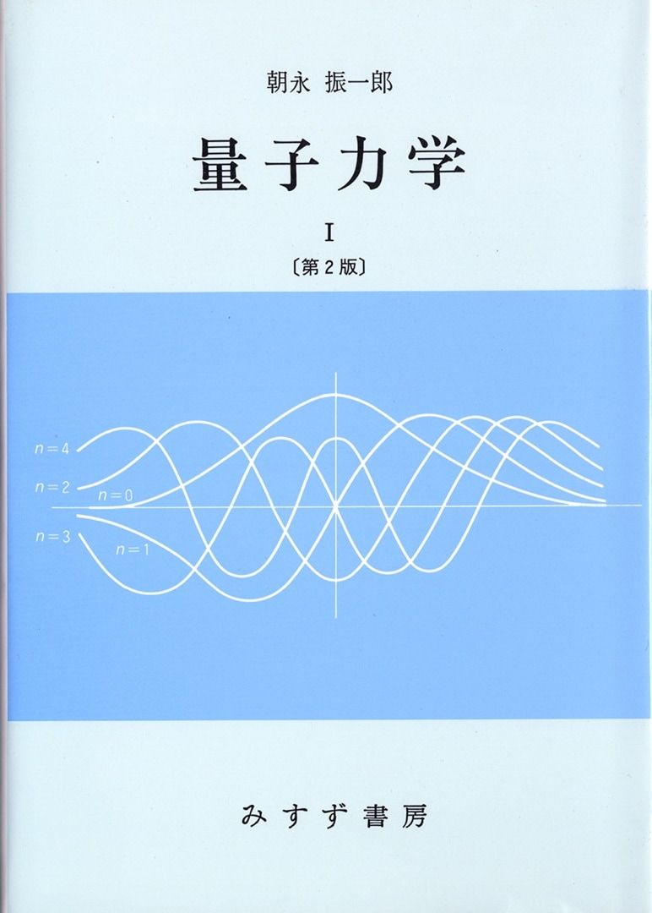
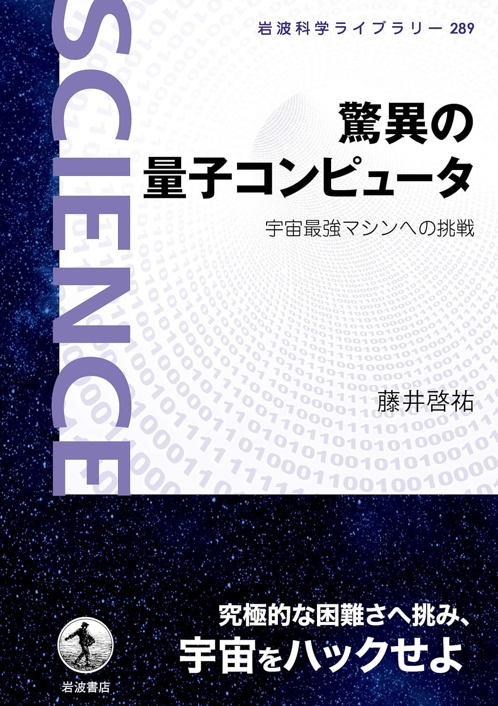

量子力学
量子力学のおすすめ参考書です。途中で投げださず、頑張りましょう。

現代の量子力学(上) J.J.Sakurai著
これを読まずして量子力学をやっている人はいるのだろうか？もし居たらそれは天才か化け物か？と思うぐらい名著。実際、この本を読むまでは量子力学の理解が常にフワフワしていたが、それらが一気に晴れる快感を味わった一冊。量子力学で色々と苦戦したあと、もう一度初心にかえる気持ちで読んでほしい。ブラケット形式から始まる一風変わった最高の名著。

量子力学(I)
小出昭一郎著
一冊目に読むものとして非常におススメできる標準的な教科書。途中で必要になる数学の知識(線形代数、フーリエ解析、特殊関数論)についても丁寧に書かれているので勉強しやすい。量子力学は一冊勉強しただけ理解できるものではないので、あまりムキにならずとりあえず先まで読み進めてみてほしい。

入門 現代の量子力学 量子情報・量子測定を中心として
堀田昌寛著
令和版JJサクライの位置付け。決して易しい内容ではないが、量子力学の一般書である程度用語に慣れ、入門的な教科書に何冊も挑戦した後に読むと霧が晴れたような感覚を多く味わえること間違いなし。ちなみに原稿段階で読ませていただいてコメントをしたのでまえがきに名前が載っている。(なんと本名ではなく活動名で)

量子力学 I 朝永振一郎著
量子電磁力学における業績でノーベル物理学賞を受賞した朝永先生による教科書。歴史的な発展に沿って量子論の幕開けから朝永先生独特の語り口で説明されておりめちゃくちゃ面白い。初学者や学生は現代的に整理された他の教科書で学ぶことをおすすめするが、一通り学んだあとで読むと格別の面白さ。第1巻は前期量子論からハイゼンベルクの行列力学まで。第2巻でシュレーディンガー方程式が登場する。全3巻の想定だったそうだが、第3巻の道半ばで先生が逝去され残念ながら完結はしていない。

脅威の量子コンピュータ 藤井啓祐著
量子情報分野の第一線の研究者が書いた量子コンピュータについての一般書。 良くも悪くも多くの情報が溢れるこの分野で、「概観を知りたければこの本！」 と強くおすすめできる一冊。量子コンピュータの将来性と現実が分かります。